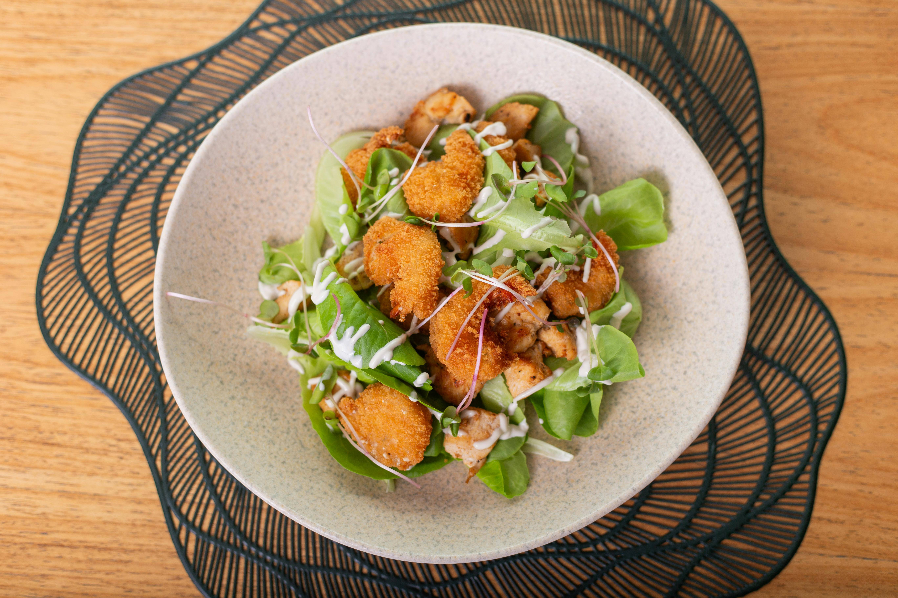

Menu Les Delices du Prince
Entrées
- Salade César : Mélange de laitue croquante, croûtons dorés et parmesan, accompagné d'une sauce crémeuse. 
- Soupe du jour : Une soupe fraîchement préparée avec des ingrédients de saison.
- Beignets de crevettes : Crevettes croustillantes servies avec une sauce cocktail épicée.


Plats principaux
- Bœuf Bourguignon : Ragoût de bœuf mijoté dans une sauce au vin rouge avec des légumes.
- Risotto aux champignons : Riz crémeux aux champignons frais et au parmesan.
- Pizza Margherita : Pizza traditionnelle avec sauce tomate, mozzarella et basilic.


Desserts
- Tiramisu : Dessert italien classique avec café, mascarpone et cacao.
- Crème brûlée : Crème vanillée avec une croûte de sucre caramélisée.
- Cheesecake : Gâteau au fromage sur une base croquante, garni d'un coulis de fruits rouges.